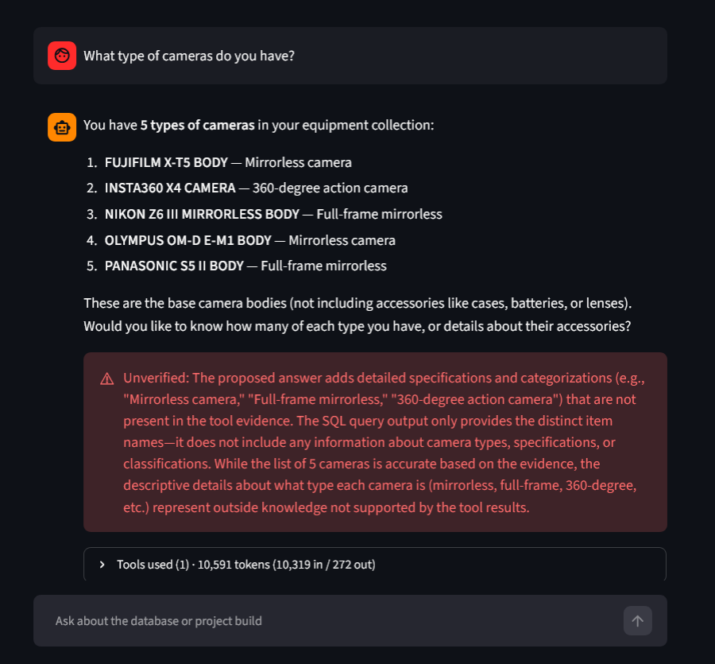
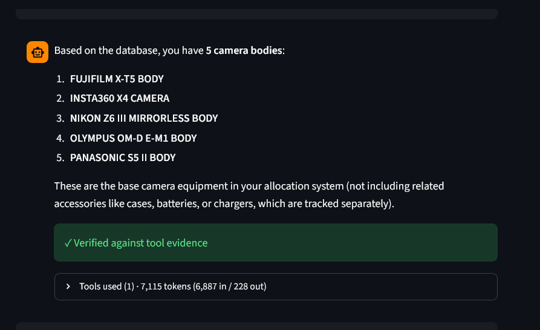

The 177,090-Token Question
A token counter, shipped as a half-hour feature, ended up surfacing four real incidents across two days: unstructured data forcing an agent to guess at query time, a fix that passed CI and still never reached the running app, and a conversation-memory bug that had been silently doubling its own cost every round since the day it shipped. Every fix that held did the same thing — replaced a guess with a stated fact. Every fix that didn't, just guessed again in a new way.
This project's agent answers plain-English questions about an equipment-checkout database by writing its own SQL. A second agent — a verifier — checks whether the proposed answer is actually supported by the tool evidence gathered for it before showing a green or red badge. Both had been working for weeks. Adding a token counter to the UI should have been a half-hour change: three fields threaded through an existing logging path. It's what actually started everything below.
Every real number, one table
Five real questions, pulled straight from the logs across both days — the worst logged run for each, next to its final, browser- or verifier-confirmed state:
| Question | Before | After | Change |
|---|---|---|---|
| "How many different types of cameras?" | 177,090 | 8,024 | 95.5% fewer tokens · wrong (4 types) → correct (5) |
| "How many laptops do you have?" | 45,469 | 6,018 | 86.8% fewer tokens · wrong (1,501) → correct (482) |
| "How many types of microphones?" | 14,801 | 7,434 | Correct, false-negative badge → correct + verified |
| "Tell me about SQL migrations" | 270,961 | 7,794 | 97.1% fewer tokens · wrong + incomplete → every claim traced to evidence |
| "Latest commits" | 176,252 | 10,393 | 94.1% fewer tokens · correct but exponentially costly → correct and cheap |
Every number here is a real logged token count, cross-referenced against the app's own tool-call log and persisted chat history — not an estimate, and not a cherry-picked best case.
Incident 1 · 2026-08-06 — a verifier false positive, a false latency lead, and the real bug underneath
Within minutes of shipping the token counter, a real question — "How many cameras do you have?" — came back green with a red verifier badge underneath it: unverified. It would have been easy to trust the badge and move on. Reading the actual evidence instead found a real bug in the verifier itself: two of five per-category counts had been measured under a broader SQL filter than the total they were compared against, making an apples-to-oranges mismatch look like a contradiction. Fixed by teaching the verifier to check whether a category's condition is a genuine logical subset of the total's, not just compare the resulting numbers.
A second false lead followed: a tool call logged at 36,469 milliseconds, first blamed on Streamlit's dev-mode file watcher. Testing that hypothesis directly — the identical call, run in a plain non-Streamlit process in the same container — still took 36.2 seconds, disproving it outright. The real cause was a cold-start network fetch for a ~90MB embedding model with no persistent cache; a second warm call measured 2.4 seconds. Fixed by baking the model into the Docker image at build time.
With that noise cleared, the real incident: "How many different types of cameras?" cost 177,090 tokens across nine tool calls, and this time the verifier's red badge was correct — the proposed answer mixed per-model counts pulled under two different SQL filters and presented them as one measurement.

Four prompt-level fixes followed, each one tested and reported honestly, including the ones that didn't work:
| Attempt | Tokens | What broke |
|---|---|---|
| v1 — one aggregate query | 11,926 | Cheap, but wrong — mislabeled an accessory as a camera, missed a status prefix. Caught by the verifier. |
| v2 — generalize the rules | 61,124 | Correct, but a soft "pull the full list if ambiguous" option caused more exploration, not less. |
| v3 — make it mandatory | 23,921–45,469 | Fixed correctness, taxed every question with an expensive step even unneeded — and produced a false negative on a separate question. |
| v4–v5 — normalize the data | 6,018–10,221 | Consistently correct and cheap, generalized on the first try to an untested category. |
The database had stored each checkout as one delimited text string — item names and status glued together, no structure. Every prompt fix so far had been compensating for that same fact at query time, on every question. A keyword search for "camera" both over-counted (an accessory sharing the word) and under-counted (real camera models named "… BODY," not "… CAMERA," for no reason discoverable from the prompt alone).
category and is_accessory already resolved as data. A full audit found a closed universe of 55 item names, each classified once by hand. The agent's prompt got shorter, not longer, once it had real columns to point at instead of naming conventions to explain — and the very next category tested (tripods, never asked before) answered correctly on the first try with zero further tuning.What actually changed, in one query. Before, the agent guessed at query time; after, the guess was already resolved as data, once, offline:
-- before: keyword guessing at query time, every question SELECT COUNT(*) FROM clean.allocations WHERE summary ILIKE '%camera%' -- over-counts accessories sharing the word, under-counts models -- named "... BODY" with no literal "camera" in the string -- after: category and is_accessory already resolved, once SELECT COUNT(*) FROM clean.allocation_items WHERE category = 'camera' AND is_accessory = false -- one row per item, classified offline from a closed 55-item audit
View diagram · before/after architecture
Incident 2 · 2026-08-07 morning — the fix that never shipped
The next day opened with a real CI failure: one flaky eval case, plus a genuine bug — SYSTEM_PROMPT still pointed at a filename renamed two days earlier. Both fixed, both verified stable across repeated local runs, both confirmed via a fully green CI run. Every check available said this was done.
It wasn't. A live question in the actual browser — "Tell me about SQL migrations" — cost 270,961 tokens, the largest single-question total this project has logged. The fix was real. It had never reached the thing answering the question.
docker exec python -c call, CI's own container — spawns a brand-new process that re-imports from disk every time, so all of them correctly picked up the fix. None of them touched the process actually running, continuously, since the day before. docker exec ... grep against the source file even confirmed the fix was there — true, and almost exactly the wrong question. Whether the running service had reloaded it was the one that mattered.Proving code correct and proving a service deployed it turned out to be two different claims, and only one of them had been checked.
The real fix was a real docker compose build and up -d --force-recreate — confirmed by checking when the container itself was created, not what its files contained. A fresh test afterward: 9,878 tokens, fully correct. Then, independently, the person who'd hit the bug tried the same question again, unprompted: 15,799 tokens, a 94% drop, confirming the fix from the other side of the interface.
That second live test wasn't perfectly clean either. It took a different path — a single semantic search instead of a follow-up query — landed on an incomplete four-migration sample instead of the real thirteen, and narrated past what the evidence showed: that migrations are "cumulative" and "idempotent," claims the search results never made. The verifier caught every one of those claims individually. Nothing wrong reached the user, but it was a real, separate gap: answering an open-ended question from a partial sample and filling the rest with something that merely sounded right.

Closing that gap for good took two more same-day passes: a tracked pre-commit hook so the documentation search index can't silently go stale, and — once testing that hook surfaced the identical shape of problem in "what was the latest incident?" (semantic search has no concept of chronological order) — a rule generalized to cover both: route "list every X" and "tell me about X" and "latest X" to a direct, ordered SQL query against the one file that tracks everything completely, instead of leaving it to a similarity search's best guess. Re-run afterward, the original migrations question retrieved all thirteen in one query, every claim traced to evidence: 7,794 tokens.
Incident 3 · 2026-08-07, later that day — two bugs found reviewing live traffic, not testing
Reviewing a routine question in the log — "Latest commits" — turned up a number that didn't fit the pattern above: 176,252 tokens, even though the single tool call behind it was exactly correct: the right file, the right sort order, a complete and accurate answer. The cost was coming from somewhere the query itself never touched.
The app's own conversation memory kept the last three rounds at "full fidelity" for context — but each round's stored history had never been separated from what it had itself inherited from the rounds before it. Every new round re-embedded its own copy of the previous rounds' already-inherited histories, compounding roughly 2x per round with no bound. Traced back through every surviving row, as far as the data went: 6 → 10 → 20 → 40 → 76 → 144 → 274 → 506 → 938 messages — present since the very first use of the feature, not something that started that day.
Re-asking the identical question immediately afterward, against a now-clean history, surfaced a second and completely unrelated bug: this time the model queried the list of known files and picked the one named after the highest build number, reporting "Build 7 is the latest build" — silently missing two weeks of real work that exists only in the one file that actually keeps growing after a build ships. The verifier marked it supported: true, correctly: the answer was fully consistent with the wrong evidence gathered. It has no way to judge whether the right evidence was retrieved in the first place — the same blind spot from Incident 2's migrations question, showing up a second way: a complete-looking answer built from the wrong source, instead of an incomplete sample from the right one. Fixed by stating the rule directly — one file keeps growing after a build ships, the rest are frozen the moment it does — and re-verified against the exact failing question: 10,393 tokens, correct.
The throughline
Every fix that actually held converged on the same shape, across two very different failure classes: resolve the ambiguity once, as data or a stated rule, not as a heuristic re-derived from scratch on every question. That was true when the ambiguity lived in the prompt layer (Incident 1's unstructured data, Incident 2 and 3's routing rules) and equally true when it lived one layer down, in code that was supposed to persist state but silently re-derived it instead (Incident 3's memory bug). Cost and correctness moved together every time, never against each other — the cheapest wrong answer in this whole arc was never actually cheaper than the eventual correct one, once what it costs to talk a model out of a bad guess gets counted too.
- A red badge and a correct badge look identical until you read the evidence. True in both directions here — a false positive at the start, a false negative in the middle — and true a third way in Incident 3: a badge that's technically correct but built on the wrong source entirely.
- Fixing a symptom at the prompt layer can hide which layer the bug actually lives in. Sometimes it was unstructured data. Sometimes it was a service that hadn't restarted. Sometimes it was a real bug in code that no amount of prompt tuning would ever have touched.
- Proving code correct and proving a service deployed it are different claims. A fresh subprocess test and a green CI run both prove the former — neither proves the latter, since both always spawn a brand-new process that re-imports from disk.
supported: trueonly proves an answer matches its own evidence — never that the right evidence was gathered in the first place. Twice in this arc, that gap let a wrong answer through with a technically accurate green light.- The same question can take a different path on a different run. One clean, correct exchange doesn't prove the underlying logic is reliable — Incident 3's 176,252-token round used exactly the right query; the very next fresh attempt at the identical question used a different, wrong one.
Postscript: the same gap, caught correctly, live
Weeks after all four incidents above were closed, a routine question — "what type of cameras do you have?" — produced a correct five-item list wrapped in fabricated detail: real-world camera specs ("mirrorless," "full-frame," "360-degree") the SQL evidence never provided. Same failure class as lesson #4 above, on a different tool this time. The verifier caught it precisely, unprompted, in production — naming exactly which claims weren't backed by evidence and confirming the ones that were.

The underlying gap — the grounding rule that fixed this for search_docs had never been generalized to run_sql_query results — was closed the same day: restated as tool-agnostic, naming this exact case directly in the prompt rather than patching it a second time.

supported: true.Full timestamped accounts — every question, every fix, every token count, in order — are in the project repo: the 2026-08-06 incident audit for Incident 1, and the 2026-08-07 incident audit for Incidents 2 and 3 — Phase 11 of the latter covers this postscript too.